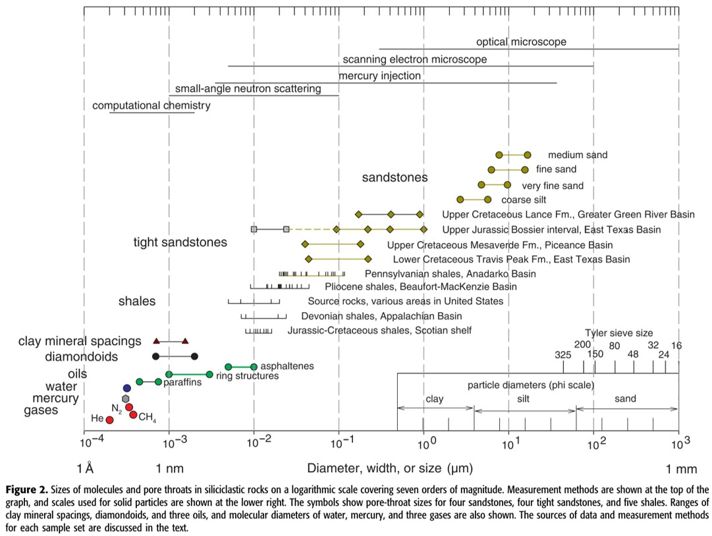

Factors Affecting Adsorption in Shales
Table of Contents
1 Clay Mineral Content
- whilst mineral content did not directly affect sorption characteristics, they are closely correlated with the coal's pore structure, which has a major influence on sorption and kinetics Crosdale1998
2 Moisture
- Gasparik2014 demonstrated that moisture content can have a significant impact on adsorption kinetics but did not investigate further
- Moisture significantly alters multicomponent adsorption equilibria Clarkson2000
- Moisture decreases CO2 selectivity in coals, although relative experimental errors for this study was over 10% - we must be cautions in drawing inferences from these results Clarkson2000
- Moisture equilibrated coals took longer to reach equilibrium Clarkson1999
- Methane adsorption capacity of moisture equilibrated coals was about 40% lower than dry shales Ross2007
- CO2 adsorption capacity of moisture equilibrated coals at 50% RH was reduced by about 30% Mazzotti2009
- Equilibrium moisture content was strongly correlated with the alumino-silicate fraction of shales Ross2007
- Varying levels of moisture desorption is believed to be one of the key challenges in achieving inter-laboratory reproducibility Mazzotti2009
- Standard procedures for measuring adsorption in shales in the presence of water are not well established. Adsorption is typically measured using manometric or gravimetric methods on samples equilibrated to various levels of relative humidity, assuming that water is not desorbed whilst carrying out methane sorption studies. However, it is possible that moisture is desorbed with increasing methane partial pressures, leading to a quasi-critical moisture content that is not applicable at reservoir conditions.
3 Oxidation
- long storage times or high temperature may lead to oxidation of shale components leading to decreased sorption capacities by as much as 11% Krooss2002
4 Pore Structure
- the porous structure of the adsorbate is one of the most important factors that determine the nature of adsorption phenomena in porous solids Bering1966
- application of theories derived for a smooth surface of a non-porous crystal has no theoretical basis and is purely empirical in nature Bering1966
- It's generally recognized that micropore volume is a significant contributor to a shale's Specific Surface Area (SSA), which in turn is a key control on amount adsorbed Wang2016
- mesopore volume has not been shown to influence adsorption to the same degree as micropore volume Crosdale1998
- In microporous substances such as shales, micropore volume is expected to have a greater control on the adsorption capacity of the substance than the surface area Clarkson1999
- The mean pore throat sizes in shales range between 5nm and 100 nm, whilst for conventional reservoirs mean pore sizes are generally greater than 2 \(/mum\) Nelson2009
- For comparison the diameter of a methane molecule is about .414 nm,
- that of a carbon dioxide molecule is about .232 nm, and
- that of a water molecule is about .275 nm.

Figure 1: Pore Size Distribution from Nelson 2009